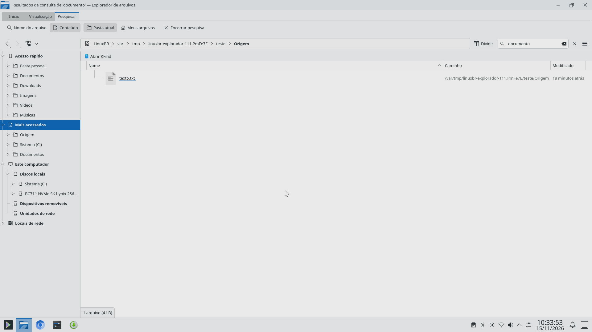

Abra a pasta desejada e use o campo de pesquisa à direita da barra de endereços. Na aba Pesquisar, escolha Nome do arquivo ou Conteúdo e limite a busca à pasta atual ou amplie para seus arquivos. Use Encerrar pesquisa para voltar à pasta.
